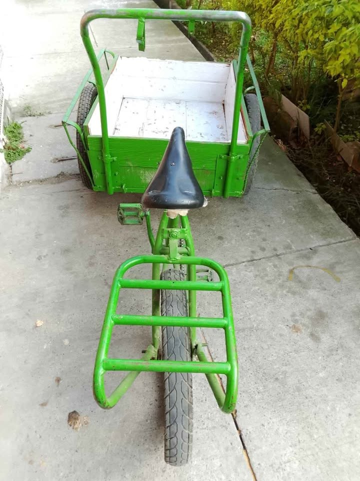

01 · Producto
Especificación del vehículo para recolección con cajón publicitario desmontable. Capacidad máxima 250 kg —de trabajo 150—, cajón de 387 litros, estructura en cold rolled.
← Volver al inicio · Descargar PDF
| Componente | Especificación |
|---|---|
| Estructura | Tubería redonda y cuadrada estructural en Cold Rolled |
| Piso | Lámina calibre 20, resistente y liviana |
| Rodamientos | Industriales de balineras |
| Llantas | 17 × 250 de moto, con radios para carga |
| Freno | De coster (contra pedal) marca Velosteer + freno de parqueo |
| Guardabarros | Metálicos |
| Cajón | Metálico, independiente del triciclo |
| Medidas del cajón | 65 cm ancho × 85 cm largo × 70 cm alto |
| Volumen útil | ≈ 387 litros (0,65 × 0,85 × 0,70 = 0,387 m³) |
| Medida total | 1,90 m de largo aprox. |
| Parrilla trasera | Con cajón de 30 × 30 × 30 cm (27 litros) |
| Silla | Abullonada |
| Pintura | Electrostática, gofrada o lisa |
| Capacidad de carga | 250 kg |
| Peso del vehículo | ≈ 90 kg |
Los 250 kg son el techo estructural del equipo: el punto en el que la lámina calibre 20, los ejes y los radios todavía aguantan. No son un peso de trabajo. Pasar de 150 a 250 kg no es «un 66% más de esfuerzo»: en plano se nota, y en pendiente convierte el pedaleo en empujar.
| Carga en el cajón | Peso total rodando | Plano (0%) | Subida 3% | Subida 5% |
|---|---|---|---|---|
| 100 kg | 265 kg | 9,9 km/h | 2,8 km/h | 1,9 km/h |
| 150 kg | 315 kg | 8,3 km/h | 2,4 km/h | 1,6 km/h |
| 200 kg | 365 kg | 7,2 km/h | 2,0 km/h | 1,4 km/h |
| 250 kg | 415 kg | 6,3 km/h | 1,8 km/h | 1,2 km/h |
Peso total = vehículo de 90 kg + conductor de ~75 kg + carga. Las velocidades son las que se sostienen con unos 90 W de pedal, el esfuerzo que aguanta una jornada de cinco horas a 2.640 m de altura. Es un cálculo sobre esos supuestos, no una medición.

La unidad a usar: bastidor y cajón en tubo y lámina pintados de verde, cajón abierto con forro claro, parrilla tubular frente al sillín y tres ruedas con llanta de tacos.
| Lo que se ve | Qué implica en la operación |
|---|---|
| Cajón bajo y abierto, con forro interior claro | El volumen útil llega antes que el peso en cartón y papel. Necesita red o cabuya: con el cajón abierto la carga se sale en los huecos. |
| Parrilla tubular del lado opuesto al cajón | Sirve para volumen liviano —bolsas de PET, costales vacíos—. No para metal ni vidrio: el peso ahí se va directo a la dirección. |
| Tres ruedas con llanta de tacos | Buena tracción en rampas y en destapado, pero más resistencia a la rodadura en pavimento: los tiempos del plan llevan margen. |
| Todo en tubo y lámina pintada, cajón atornillado | Se puede reforzar y repintar por partes; el cajón atornillado es la base para el panel publicitario. |
| No se ven luces, espejos ni cinta reflectiva | El jueves cierra a las 19:10. Sin luces y sin reflectivos, ese día no se hace en dos tandas. |
| No se alcanza a ver el freno | Es el dato más crítico: con 150 kg y las bajadas del centro, sin freno trasero y freno de parqueo no se opera. |
| Opción | Para qué sirve | Comentario |
|---|---|---|
| Cajón trasero | Carga extra o separación de material | Ojo con el largo total y el peso en el eje trasero |
| Carpa rectangular | Protege el material de la lluvia | El cartón y el papel mojados pierden valor o se rechazan |
| Parasol | Puesto de venta y protección solar | Útil si el triciclo también se usa como punto de venta |
| Luces | Visibilidad y trabajo antes del amanecer | La ruta 1 arranca a las 5:00 |
| Motor eléctrico | Autonomía y menos esfuerzo con carga | Cambia costo diario, peso y requisitos legales |
| Punto | Frecuencia sugerida | Qué revisar |
|---|---|---|
| Balineras y ejes | Semanal | Juego, ruido y grasa: con 250 kg cualquier holgura se vuelve falla |
| Freno de coster | Semanal | Que frene parejo y que el de parqueo sostenga el vehículo cargado en pendiente |
| Radios y llantas 17 × 250 | Semanal | Tensión de radios y presión; una llanta baja con carga destroza el rin |
| Piso calibre 20 | Mensual | Golpes y puntos de óxido, sobre todo si se transporta vidrio o metal húmedo |
| Pintura electrostática | Trimestral | Rayones profundos: un borde descubierto empieza a oxidar la estructura |